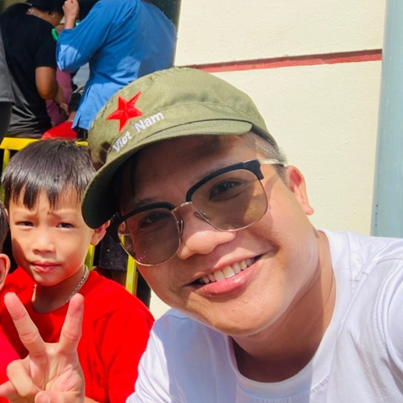

Power-grid AI
Decision support, grid security analysis and operational intelligence for complex electricity networks.
AI/ML Scientist & AI and Data Solution Architect
I work where applied AI, optimization and power-grid operations meet. From research to real-world systems, I build technology that helps people make better decisions.

My background spans engineering optimization, machine learning and the design of practical AI systems. I care about both the scientific method and what happens after a model leaves the lab.
With a PhD in Engineering Optimization, I research, design and deploy AI solutions that connect technical capability with operational needs.
My work has included multilingual embedding models, language and speech technologies, and intelligent systems for power-grid operations.
A mix of modeling, systems thinking and delivery, with an emphasis on AI that works in demanding real-world settings.
Decision support, grid security analysis and operational intelligence for complex electricity networks.
Neural networks for NLP, vision and multimodal applications, shaped by the problem and its data.
Specialized language models, multilingual embeddings, speech recognition and domain applications.
Engineering methods to improve decisions, model efficiency and computational performance.
Taking research models into scalable, reliable systems with clear operational value.
Connecting researchers, engineers and business teams around the same practical outcome.
A few markers of the work behind the ideas.
Winner of the Paris Region AI Challenge for Energy Transition, developing AI approaches for power-grid management.
Read the story ↗French, English and Vietnamese embedding models shared with the research and developer community.
Explore models ↗Doctoral research in optimization, informing a rigorous approach to AI design and deployment.
Research foundationNotes and long-form writing on trustworthy AI, the energy transition and the changing practice of grid operations.
Why operational trust depends on physics-based verification, traceable evidence and clear human authority.
Read articleEnergy systems · 2026Exploring transmission technology and the infrastructure behind large-scale offshore wind.
Read articleGrid operations · 2025How AI can help preserve and amplify expertise in power-grid operations.
Read articleCuriosity and meaningful work matter to me, but so do sincerity, balance and helping others. I write about that side of the journey, too.
Read The Giving Journey ↗“My life philosophy is sharing and giving.”From The Giving Journey
Interested in AI for energy, solution architecture or open-source collaboration? I'd be glad to hear from you.